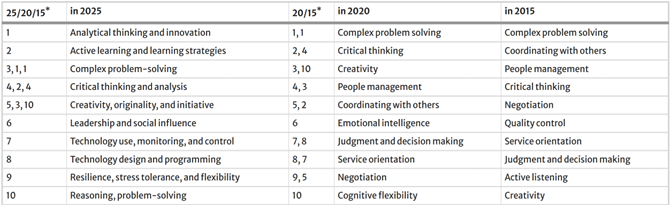
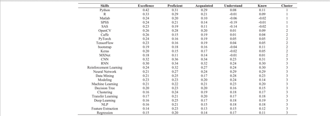
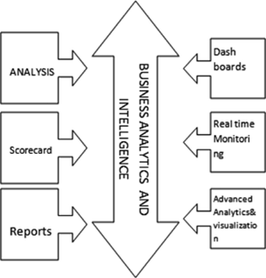
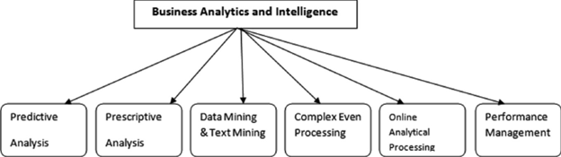
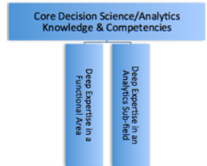

Qualitative Research on Business Analytics, Data Science and Machine Learning Trends
1. Selection Rationale: We are at the early stages of our careers in the data analytics field, and as we look to pursue opportunities in the current, rapidly evolving U.S. market—specifically for data or business analysts—our priority is to focus on the critical requirements of data roles that help us fill any existing gaps in our skill set. Hence, we will conduct a qualitative deep dive into trends and recent changes in the analytics, data science, and machine learning domain before proceeding to verify whether this qualitative analysis is supported by the quantitative assessment of the Lightcast job posting data we have at hand.
Also, it is important to note that most data analytics principles can be applied to business analytics, as the two roles have a high degree of overlap. The former involves cleaning and processing data, while the latter (business analytics) takes those insights further and translates them into business decisions or improvements in policies, processes, or operations. In essence, data analytics focuses on the “what” and “why” from data, while business analytics goes further into developing the “how” and “what next” by leveraging those insights. (Jin Liu & Lyu, 2024)
2. Introduction: This is a brief overview of how the convergence of Data analytics, Big Data and Machine Learning has become an influential force in every business that relies on data-driven decision-making. It also covers how Industry 4.0 is revolutionizing the manufacturing as well as service processes all over the world. In simple words, Industry 4.0 is an amalgamation of multiple disciplines like Internet of Things (IoT), Industrial Internet of Things (IIoT), artificial intelligence, machine learning, hyper convergent Infrastructure, deep learning and virtualization, all these create a strong and intelligent production system for businesses that enable them to carve insights from heaps of data that they are collecting but at the same time translate them into actionable items that are strongly backed. (Li, 2022). The review then shift focus on the importance of reskilling and/or upskilling is critical to be part of the talent that realizes Industry 4.0 to realize its full potential.
The World Economic Forum projected that half of all employees worldwide would need to reskilling by 2025 in its future jobs report 2020. (Forum, 2020). Life-long learning is not a choice but a norm in 2025 with the advent of AI, advanced applications of machine learning and increase uncertainty around ability of AI to replace candidates with jobs that have tasks that have potential to be automated.
The top 10 skills comparison from 2015, 2020 to 2025: 
In context of Data science and machine learning, these are most sought soft skills in 2025, however industry reports reveal that there is shortage of big data client in the field and companies prefer candidates that possess one to three years of experience because they can quickly adapt to changing industry needs and help companies realize their full potential backed by big data processing and analysis. (Yugal, 2022) The literature review delves into details of each domain, explaining how they have evolved and what is required for success in this fast-evolving tech space.
3. Machine Learning Trends: As the digital era continues to push the envelope of transformation, the trifecta or the combination of Data Analytics, Big Data and Machine learning becomes a vital source for businesses to search practical insights and long-term advancement. This intersection has necessitated the need for new skill sets to effectively analyze and interpret complex, high-volume data. To understand the required skills in this domain, it is important to understand the full range of applications of ML. It ranges from decision-making processes, modeling layout form, identification of results from data analysis, and forecast for big data analytics-oriented programs.
In terms of industry specific applications, in life sciences ML is progressively used as a analytical and computational tool for study of vast unstructured data of genome libraries to set up automated workflows. Virtual assistants have been powered by ML-enabled speech recognition technology. In combination with ML, Deep learning has become a potent instrument in variety of sectors like audio and picture identification, natural language processing and even medicine (Bhattacherjee & Badhan, 2024). For these a sustainable talent training system is required, and it becomes the mission and responsibility of educational institutions as well as individual candidates to realize the full-scale potential of this domain. For instance, deep learning libraries like PyTorch, TensorFlow, Keras and MXNet have recently been developed and if these are introduced as conceptual content to students in advance, it will place a foundation of big data talents at the forefront and address the shortage of experienced and skilled talents that the business are looking for. (Han & Ren, 2024) A cluster analysis of Big Data expertise needs provided scores for various variables for each tool, algorithms and techniques. 
4. Business Analytics Trends: With the advent of AI and digital governance evolving rapidly, the Business analytics field has expanded beyond just managerial outlook and expertise in the business process with some level of analysis. The emergence of Big Data has led to the involvement of Business analysts in statistical analysis as well as processing of vast amounts of data to generate insights. BA & intelligence teams can take those insights further to translate them into business process improvements, development of new practices by generating dashboards or written reports for stakeholders. (Yugal, 2022) 
BA & I involves a lot more techniques post 2023 that are implemented to structure a process of business decision-making. AI/ML integration, Cloud based analytics, and predictive analytics are at the forefront of this domain as volume of data is expanding rapidly and so as the cloud infrastructure adoption to execute analytics and forecast trends, customer behavior and understand market dynamics. (Business Management & Research, n.d.)

5. Data Science Trends: To establish an understanding of this domain in simpler terms, one can say it is a step or few advanced to data analytics. It has high overlap with ML engineers and MLOps engineers and that makes sense in the real world as more and more companies expect their employees to have an understanding of a bit of everything because of the need of strong collaboration between these teams for each project.
About 20,800 openings for data scientists are projected each year since 2024, on average over the decade. The growth of this space is expected to be 36% from 2023 to 2033, which is much faster than average of all the other occupations. (Labor Statistics, 2024)
Data science is more of an umbrella term that has been derived from industrial demand. The T-shaped configuration of skills is generally used to analyze the breadth of knowledge and skills required for a domain and to identify a functional area that one would like to gain expertise within that domain. The T-shape or π-shaped diagram for analytics is shown below: (Shirani, 2016) 
Exploring the skillsets that have been dominant in data science roles across the board in recent years are below: ##Deep Learning: It is at the forefront of many in-demand frameworks right now, such as generative adversarial networks (GANs) and reinforcement learning which dive into artificial intelligence but as described in this entire review, each of these fields touch AI discipline in some form with data science and ML being closest to it. Sophisticated models like image classification, NLPs and anomaly detection use deep learning techniques and candidates who are looking to enter this space must have strong foundation of mathematical concepts (linear algebra, calculus, probability and statistics) and then should have understanding of core principles of deep learning – neural networks and backpropagation. (Nobrega, 2024)
##Machine Learning Deployment: It is understood that experimenting various ML models on the data to capture patterns is a pre-requisite now, deploying the validated models in a production environment is crucial to derive business value. For this, candidates are required to have a strong grasp of fundamentals of ML, they should be familiar with one of the cloud platforms and should have understanding of deployment tools like Docker or Kubernetes. In addition to this, understanding of MLOps best practices and lifecycle management of ML models is also expected. Hence, it is clear that the role involves lifelong learning and hands on practice on the tools and to have all basics covered so that foundation for creativity can be laid when it comes to execution. (Nobrega, 2024)
6. Conclusion:It is evident that in the past 2 years, each role deals with vast amount of data and hence understanding of cloud infrastructure and big data techniques is essential for success in these roles. Although, the expertise or level of skills in these disciplines may vary for each role but it is essential to have curiosity and willingness to upskill and reskill as per the evolving needs in the analytics domain and overall business requirements to stay relevant in the market.